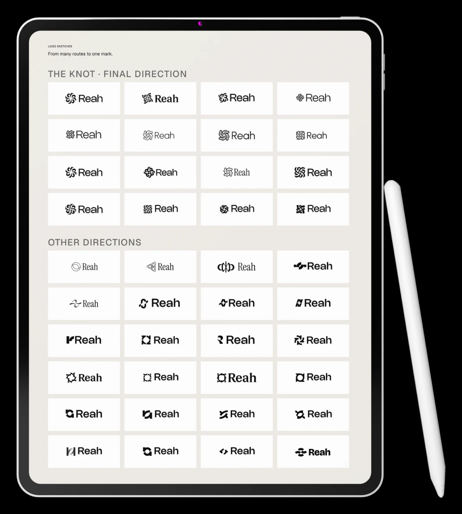
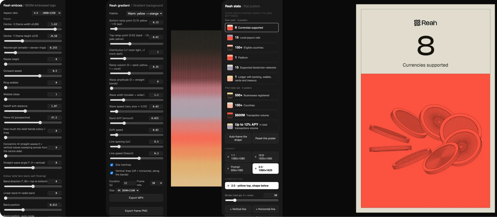
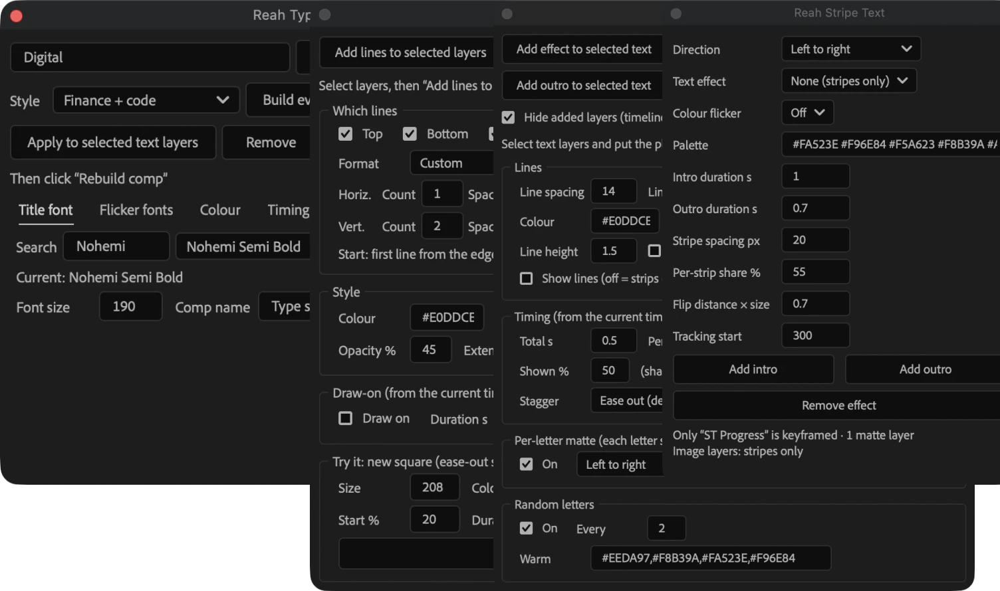

Reah
Building the brand for one global account — from launch to $600M+ in transaction volume.
- Role
- Art Director & Principal Brand Designer
- Scope
- Visual Identity · Motion · 3D · Website & Product UI
The challenge
Global businesses juggle disconnected bank accounts, wallet apps, exchanges, spreadsheets and approval workflows. Reah needed a brand that makes banking and stablecoins feel like one trustworthy system — credible to finance teams, native to crypto teams.
The solution
We built the brand around one idea: many moving parts, one calm system. A restrained typographic core and a signature colour band give Reah the steadiness finance demands, while 3D forms and motion show money flowing between accounts, wallets and cards — complex underneath, simple on the surface.
Logo
One mark for every way your money moves.
Reah stands for every way your money moves. Four lines curl in from different directions and meet in the middle, and the negative space between them forms a four-pointed star, a spark of intelligence. Drawn with the contrast of a classic serif, it reads like a seal you can trust.

Designing with AI
Design direction, amplified by AI.
AI changed how this brand was made, shared and shipped: the style lives as code, validation is led by design, and motion is scripted.
01
Style as code
Instead of a brand book of swatches and screenshots, the look and feel lives in code. The colour ramp, band spread, sway, grain and line rhythm are measured once and written as parameters in one shared library. The poster, banner, 3D forms and live site all read from the same source.
Brand assets stop being files to hand around and become a system to version. Change one value and every output follows; any new asset, even a photo, locks to the Reah palette automatically. Consistency is built in, not policed by eye.

02
From mockup to live demo
AI reshaped the workflow, not just the toolset.
In the old loop, a large share of the team’s time went into translation: rebuilding mockups in front-end code, design QA rounds, back-and-forth over spacing, states and UI details.
Now I take designs straight into the live product with AI, and they’re built precisely the first time. The site lives in a shared GitHub repo; the team reviews and comments on the running demo, and every change is a commit anyone can share, roll back and maintain.
With the detail work handled, the whole team spends its time where it matters: exploring more directions, debating the business logic, and getting the information right.
03
Motion language, scripted
With AI I write After Effects scripts and code-driven animation systems to build motion no preset offers: line forms that turn with depth, colour bands that flow, ripples that travel across the brand surface.
Each effect is a parameter set, so one idea becomes many variations, reused across the site, video and social.
